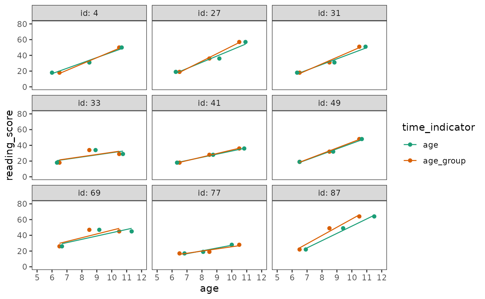
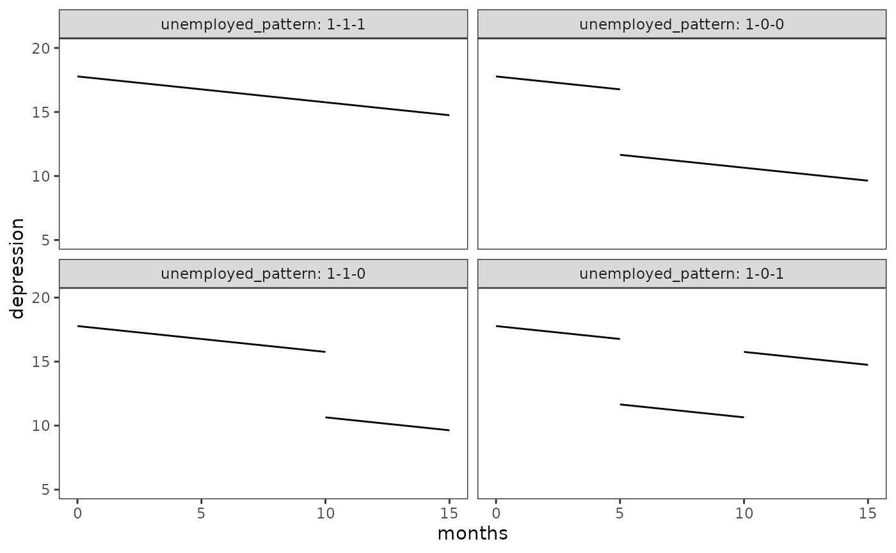
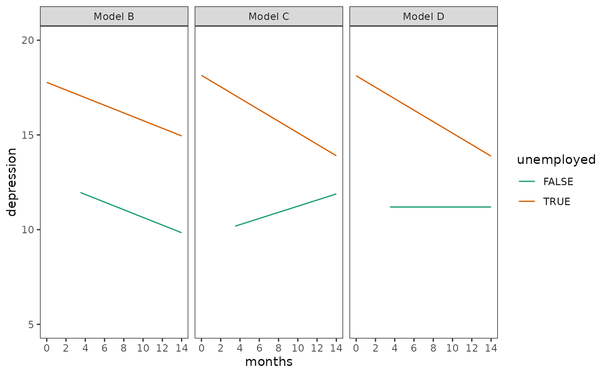
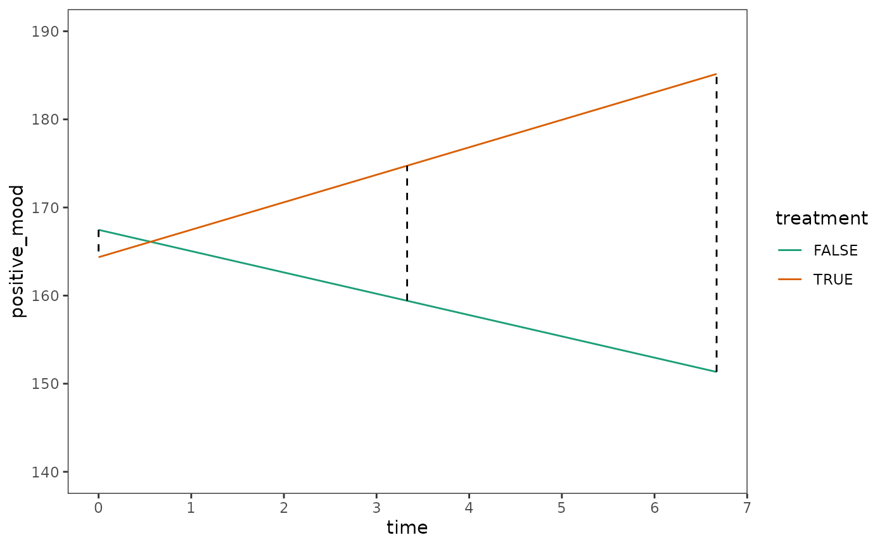

library(alda)
library(dplyr)
library(tidyr)
library(purrr)
library(stringr)
library(ggplot2)
library(lme4)
library(broom.mixed)
library(modelbased)
library(modelsummary)
library(gt)5.1 Variably spaced measurement occasions
In Section 5.1 Singer and Willett (2003) demonstrate how you can fit the multilevel model for change for data with variably spaced measurement occasions using a subset of data from the Children of the National Longitudinal Study of Youth (US Bureau of Labor and Statistics), which measured changes in the reading subtest of the Peabody Individual Achievement Test (PIAT) in a sample of 89 African-American children across three waves around the ages of 6, 8, and 10.
For this example we use the reading_scores data set, a
person-period data frame with 267 rows and 5 columns:
-
id: Child ID. -
wave: Wave of measurement. -
age_group: Expected age on each measurement occasion. -
age: Age in years at time of measurement. -
reading_score: Reading score on the reading subtest of the Peabody Individual Achievement Test (PIAT).
# Table 5.1, page 141:
reading_scores
#> # A tibble: 267 × 5
#> id wave age_group age reading_score
#> <fct> <dbl> <dbl> <dbl> <dbl>
#> 1 1 1 6.5 6 18
#> 2 1 2 8.5 8.33 35
#> 3 1 3 10.5 10.3 59
#> 4 2 1 6.5 6 18
#> 5 2 2 8.5 8.5 25
#> 6 2 3 10.5 10.6 28
#> 7 3 1 6.5 6.08 18
#> 8 3 2 8.5 8.42 23
#> 9 3 3 10.5 10.4 32
#> 10 4 1 6.5 6 18
#> # ℹ 257 more rowsNote that the structure of the reading_scores data is
identical to the person-period data sets shown in previous chapters,
except that it has three time-indicator variables:
- The values of
wavereflect the study’s design; they are time-structured across children, but have little substantive meaning. - The values of
age_groupreflect the child’s expected age on each measurement occasion; they are time-structured across children and have substantive meaning. - The values of
agereflect the child’s actual age on each measurement occasion; they are variably spaced across children and have substantive meaning.
This demonstrates a distinctive feature of
time-unstructured data sets—the possibility to have
multiple representations of time. Thus, from the perspective of the
age_group variable, the reading_scores data
appears to be time-structured:
select(reading_scores, id, age_group, reading_score)
#> # A tibble: 267 × 3
#> id age_group reading_score
#> <fct> <dbl> <dbl>
#> 1 1 6.5 18
#> 2 1 8.5 35
#> 3 1 10.5 59
#> 4 2 6.5 18
#> 5 2 8.5 25
#> 6 2 10.5 28
#> 7 3 6.5 18
#> 8 3 8.5 23
#> 9 3 10.5 32
#> 10 4 6.5 18
#> # ℹ 257 more rowsWhereas from the perspective of the age variable, the
reading_scores data appears to be variably spaced:
select(reading_scores, id, age, reading_score)
#> # A tibble: 267 × 3
#> id age reading_score
#> <fct> <dbl> <dbl>
#> 1 1 6 18
#> 2 1 8.33 35
#> 3 1 10.3 59
#> 4 2 6 18
#> 5 2 8.5 25
#> 6 2 10.6 28
#> 7 3 6.08 18
#> 8 3 8.42 23
#> 9 3 10.4 32
#> 10 4 6 18
#> # ℹ 257 more rowsHowever, as Singer and Willett (2003) discuss, the specification, estimation, and interpretation of the multilevel model for change proceeds in the exact same way regardless of which temporal representation we use; thus, it is generally preferable to use the most accurate unstructured temporal representation rather forcing the data into a time-structured design.
Here we will fit an unconditional growth model using both the structured and unstructured temporal representations to demonstrate why the latter is generally preferable. As usual, we begin by inspecting empirical growth plots to help select the functional form for the level-1 submodel.
# Figure 5.1, page 143:
reading_scores |>
filter(id %in% c(4, 27, 31, 33, 41, 49, 69, 77, 87)) |>
pivot_longer(
starts_with("age"), names_to = "time_indicator", values_to = "age"
) |>
ggplot(aes(x = age, y = reading_score, colour = time_indicator)) +
geom_point() +
stat_smooth(method = "lm", se = FALSE, linewidth = .5) +
scale_x_continuous(breaks = 5:12) +
scale_color_brewer(palette = "Dark2") +
coord_cartesian(xlim = c(5, 12), ylim = c(0, 80)) +
facet_wrap(vars(id), labeller = label_both)
A linear change individual growth model seems most parsimonious for
both temporal representations. Following Singer and Willett (2003), we
will centre both age_group and age on age 6.5
(the average child’s age at wave 1) so that the parameters of both
models have identical interpretations, and label time in each model with
a generic time variable.
reading_scores_fits <- map(
list(age_group = "age_group", age = "age"),
\(.time) {
lmer(
reading_score ~ I(time - 6.5) + (1 + I(time - 6.5) | id),
data = mutate(reading_scores, time = .data[[.time]]),
REML = FALSE
)
}
)
options(modelsummary_get = "all")
# Table 5.2, page 145:
reading_scores_fits |>
modelsummary(
shape = term + effect + statistic ~ model,
scales = c("vcov", NA),
coef_map = c(
"(Intercept)",
"I(time - 6.5)",
"var__Observation",
"var__(Intercept)",
"var__I(time - 6.5)"
),
gof_map = tibble(
raw = c("deviance", "AIC", "BIC"),
clean = c("Deviance", "AIC", "BIC"),
fmt = 1
),
output = "gt"
) |>
tab_row_group(label = "Goodness-of-Fit", rows = 8:10) |>
tab_row_group(label = "Variance Components", rows = 5:7) |>
tab_row_group(label = "Fixed Effects", rows = 1:4) |>
cols_hide(effect)| age_group | age | |
|---|---|---|
| Fixed Effects | ||
| (Intercept) | 21.163 | 21.061 |
| (0.614) | (0.559) | |
| I(time - 6.5) | 5.031 | 4.540 |
| (0.296) | (0.261) | |
| Variance Components | ||
| var__Observation | 27.043 | 27.447 |
| var__(Intercept) | 11.046 | 5.107 |
| var__I(time - 6.5) | 4.397 | 3.301 |
| Goodness-of-Fit | ||
| Deviance | 1819.9 | 1803.9 |
| AIC | 1831.9 | 1815.9 |
| BIC | 1853.5 | 1837.4 |
Comparing these models, we see that the age model fits
the data better than the age_group model—with less
unexplained variation in initial status and rates of change, and smaller
AIC and BIC statistics.
5.2 Varying numbers of measurement occasions
In Section 5.2 Singer and Willett (2003) demonstrate how you can fit the multilevel model for change for data with varying numbers of measurement occasions (i.e., unbalanced data) using a subset of data from the National Longitudinal Study of Youth tracking the labour market experiences of male high school dropouts (Murnane, Boudett, & Willett, 1999).
For this example we use the dropout_wages data set, a
person-period data frame with 6402 rows and 9 columns:
-
id: Participant ID. -
log_wages: Natural logarithm of wages. -
experience: Labour force experience in years, tracked from dropouts’ first day of work. -
ged: Binary indicator for whether the dropout obtained a GED. -
postsecondary_education: Binary indicator for whether the dropout obtained post-secondary education. -
black: Binary indicator for whether the dropout is black. -
hispanic: Binary indicator for whether the dropout is hispanic. -
highest_grade: Highest grade completed. -
unemployment_rate: Unemployment rate in the local geographic area.
dropout_wages
#> # A tibble: 6,402 × 9
#> id log_wages experience ged postsecondary_education black hispanic
#> <fct> <dbl> <dbl> <dbl> <dbl> <dbl> <dbl>
#> 1 31 1.49 0.015 1 0.015 0 1
#> 2 31 1.43 0.715 1 0.715 0 1
#> 3 31 1.47 1.73 1 1.73 0 1
#> 4 31 1.75 2.77 1 2.77 0 1
#> 5 31 1.93 3.93 1 3.93 0 1
#> 6 31 1.71 4.95 1 4.95 0 1
#> 7 31 2.09 5.96 1 5.96 0 1
#> 8 31 2.13 6.98 1 6.98 0 1
#> 9 36 1.98 0.315 1 0.315 0 0
#> 10 36 1.80 0.983 1 0.983 0 0
#> # ℹ 6,392 more rows
#> # ℹ 2 more variables: highest_grade <dbl>, unemployment_rate <dbl>In the dropout_wages data, the number of measurement
occasions varies widely across individuals, from 1 to 13 waves.
dropout_wages |>
group_by(id) |>
summarise(waves = n()) |>
count(waves, name = "count")
#> # A tibble: 13 × 2
#> waves count
#> <int> <int>
#> 1 1 38
#> 2 2 39
#> 3 3 47
#> 4 4 35
#> 5 5 74
#> 6 6 92
#> 7 7 103
#> 8 8 123
#> 9 9 127
#> 10 10 113
#> 11 11 65
#> 12 12 26
#> 13 13 6Indeed, examining the data from a subset of individuals, we can see
that the dropout_wages data varies in both the number
and spacing of measurement occasions.
# Table 5.3, page 147:
dropout_wages |>
filter(id %in% c(206, 332, 1028)) |>
select(id, experience, log_wages, black, highest_grade, unemployment_rate)
#> # A tibble: 20 × 6
#> id experience log_wages black highest_grade unemployment_rate
#> <fct> <dbl> <dbl> <dbl> <dbl> <dbl>
#> 1 206 1.87 2.03 0 10 9.2
#> 2 206 2.81 2.30 0 10 11
#> 3 206 4.31 2.48 0 10 6.30
#> 4 332 0.125 1.63 0 8 7.1
#> 5 332 1.62 1.48 0 8 9.6
#> 6 332 2.41 1.80 0 8 7.2
#> 7 332 3.39 1.44 0 8 6.20
#> 8 332 4.47 1.75 0 8 5.60
#> 9 332 5.18 1.53 0 8 4.60
#> 10 332 6.08 2.04 0 8 4.30
#> 11 332 7.04 2.18 0 8 3.40
#> 12 332 8.20 2.19 0 8 4.39
#> 13 332 9.09 4.04 0 8 6.70
#> 14 1028 0.004 0.872 1 8 9.3
#> 15 1028 0.035 0.903 1 8 7.4
#> 16 1028 0.515 1.39 1 8 7.3
#> 17 1028 1.48 2.32 1 8 7.4
#> 18 1028 2.14 1.48 1 8 6.30
#> 19 1028 3.16 1.70 1 8 5.90
#> 20 1028 4.10 2.34 1 8 6.9Yet, as Singer and Willett (2003) discuss, a major advantage of the multilevel model for change is that it can easily fit to unbalanced data like this—as long as the person-period data set includes enough people with enough waves of data for the model converge, the analyses can proceed as usual.
Here we will fit three models to the dropout_wages data:
an unconditional growth model (Model A), and two models that include
predictors for race and the highest grade completed (Models B and
C).
# Fit models ------------------------------------------------------------------
dropout_wages_fit_A <- lmer(
log_wages ~ experience + (1 + experience | id),
data = dropout_wages,
REML = FALSE
)
dropout_wages_fit_B <- update(
dropout_wages_fit_A,
. ~ . + experience * I(highest_grade - 9) + experience * black
)
# The model fails to converge with the default optimizer (although the estimates
# are fine). Changing the optimizer achieves convergence.
dropout_wages_fit_C <- update(
dropout_wages_fit_B,
. ~ . - experience:I(highest_grade - 9) - black,
control = lmerControl(optimizer = "bobyqa")
)
dropout_wages_fits <- list(
`Model A` = dropout_wages_fit_A,
`Model B` = dropout_wages_fit_B,
`Model C` = dropout_wages_fit_C
)
# Make table ------------------------------------------------------------------
# Table 5.4, page 149:
dropout_wages_fits |>
modelsummary(
shape = term + effect + statistic ~ model,
scales = c("vcov", NA),
coef_map = c(
"(Intercept)",
"I(highest_grade - 9)",
"black",
"experience",
"experience:I(highest_grade - 9)",
"experience:black",
"var__Observation",
"var__(Intercept)",
"var__experience"
),
gof_map = tibble(
raw = c("deviance", "AIC", "BIC"),
clean = c("Deviance", "AIC", "BIC"),
fmt = 1
),
output = "gt"
) |>
tab_row_group(label = "Goodness-of-Fit", rows = 15:18) |>
tab_row_group(label = "Variance Components", rows = 13:15) |>
tab_row_group(label = "Fixed Effects", rows = 1:12) |>
cols_hide(effect)| Model A | Model B | Model C | |
|---|---|---|---|
| Fixed Effects | |||
| (Intercept) | 1.716 | 1.717 | 1.721 |
| (0.011) | (0.013) | (0.011) | |
| I(highest_grade - 9) | 0.035 | 0.038 | |
| (0.008) | (0.006) | ||
| black | 0.015 | ||
| (0.024) | |||
| experience | 0.046 | 0.049 | 0.049 |
| (0.002) | (0.003) | (0.003) | |
| experience:I(highest_grade - 9) | 0.001 | ||
| (0.002) | |||
| experience:black | -0.018 | -0.016 | |
| (0.005) | (0.005) | ||
| Variance Components | |||
| var__Observation | 0.095 | 0.095 | 0.095 |
| var__(Intercept) | 0.054 | 0.052 | 0.052 |
| var__experience | 0.002 | 0.002 | 0.002 |
| Goodness-of-Fit | |||
| Deviance | 4921.4 | 4873.8 | 4874.7 |
| AIC | 4933.4 | 4893.8 | 4890.7 |
| BIC | 4974.0 | 4961.4 | 4944.8 |
Likewise, even for data with varying numbers of measurement occasions, prototypical change trajectories can be derived from the model as usual.
prototypical_dropout_wages <- dropout_wages_fit_C |>
estimate_prediction(
data = crossing(
experience = c(0, 12),
highest_grade = c(0, 3) + 9,
black = c(FALSE, TRUE)
)
) |>
rename(log_wages = Predicted) |>
mutate(highest_grade = factor(highest_grade)) |>
as_tibble()
# Figure 5.2, page 150:
ggplot(prototypical_dropout_wages, aes(x = experience, y = log_wages)) +
geom_line(aes(colour = highest_grade, linetype = black)) +
scale_x_continuous(breaks = seq(0, 12, by = 2)) +
scale_color_brewer(palette = "Dark2") +
scale_linetype_manual(values = c(2, 1)) +
coord_cartesian(ylim = c(1.6, 2.4))
5.2.2 Practical problems that may arise when analyzing unbalanced data sets
The multilevel model may fail to converge or be unable to estimate one or more variance components for data sets that are severely unbalanced, or if too few people have enough waves of data. In Section 5.2.2 Singer and Willett (2003) discuss two strategies for addressing these problems:
- Removing boundary constraints, where the software is permitted to obtain negative variance components.
- Fixing rates of change, where the model is simplified by removing the varying slope change.
For this example we use a subset of the dropout_wages
data purposefully constructed to be severely unbalanced.
dropout_wages_subset
#> # A tibble: 257 × 5
#> id log_wages experience black highest_grade
#> <fct> <dbl> <dbl> <dbl> <dbl>
#> 1 206 2.03 1.87 0 10
#> 2 206 2.30 2.81 0 10
#> 3 206 2.48 4.31 0 10
#> 4 266 1.81 0.322 0 9
#> 5 304 1.84 0.58 0 8
#> 6 329 1.42 0.016 0 8
#> 7 329 1.31 0.716 0 8
#> 8 329 1.88 1.76 0 8
#> 9 336 1.89 1.91 1 8
#> 10 336 1.28 2.51 1 8
#> # ℹ 247 more rowsFirst we will refit Model C to the dropout_wages_subset
data. Note that the estimated variance component for
experience is practically zero and the model summary has
the following message at the bottom: “boundary (singular) fit: see
help(‘isSingular’)”.
dropout_wages_fit_A_subset <- update(
dropout_wages_fit_C,
data = dropout_wages_subset
)
summary(dropout_wages_fit_A_subset)
#> Linear mixed model fit by maximum likelihood ['lmerMod']
#> Formula: log_wages ~ experience + (1 + experience | id) + I(highest_grade -
#> 9) + experience:black
#> Data: dropout_wages_subset
#> Control: lmerControl(optimizer = "bobyqa")
#>
#> AIC BIC logLik deviance df.resid
#> 299.9 328.3 -141.9 283.9 249
#>
#> Scaled residuals:
#> Min 1Q Median 3Q Max
#> -2.4109 -0.4754 -0.0290 0.4243 4.2842
#>
#> Random effects:
#> Groups Name Variance Std.Dev. Corr
#> id (Intercept) 8.215e-02 0.286615
#> experience 3.526e-06 0.001878 1.00
#> Residual 1.150e-01 0.339068
#> Number of obs: 257, groups: id, 124
#>
#> Fixed effects:
#> Estimate Std. Error t value
#> (Intercept) 1.73734 0.04760 36.499
#> experience 0.05161 0.02108 2.449
#> I(highest_grade - 9) 0.04610 0.02447 1.884
#> experience:black -0.05968 0.03477 -1.716
#>
#> Correlation of Fixed Effects:
#> (Intr) exprnc I(_-9)
#> experience -0.612
#> I(hghst_-9) 0.051 -0.133
#> exprnc:blck -0.129 -0.297 0.023
#> optimizer (bobyqa) convergence code: 0 (OK)
#> boundary (singular) fit: see help('isSingular')The first strategy Singer and Willett (2003) suggest is to remove the boundary constraints of the software, however, the lme4 package does not support the removal of boundary constraints to allow for negative variance components, so this strategy cannot be replicated (Model B).
The second strategy is to simplify the model by fixing rates of change, which we do by removing the varying slope for experience. Here the model fits without issue.
dropout_wages_fit_C_subset <- update(
dropout_wages_fit_A_subset,
. ~ . - (1 + experience | id) + (1 | id)
)
summary(dropout_wages_fit_C_subset)
#> Linear mixed model fit by maximum likelihood ['lmerMod']
#> Formula:
#> log_wages ~ experience + I(highest_grade - 9) + (1 | id) + experience:black
#> Data: dropout_wages_subset
#> Control: lmerControl(optimizer = "bobyqa")
#>
#> AIC BIC logLik deviance df.resid
#> 295.9 317.2 -141.9 283.9 251
#>
#> Scaled residuals:
#> Min 1Q Median 3Q Max
#> -2.4202 -0.4722 -0.0290 0.4197 4.2439
#>
#> Random effects:
#> Groups Name Variance Std.Dev.
#> id (Intercept) 0.08425 0.2903
#> Residual 0.11480 0.3388
#> Number of obs: 257, groups: id, 124
#>
#> Fixed effects:
#> Estimate Std. Error t value
#> (Intercept) 1.73734 0.04775 36.383
#> experience 0.05178 0.02093 2.474
#> I(highest_grade - 9) 0.04576 0.02450 1.868
#> experience:black -0.06007 0.03458 -1.737
#>
#> Correlation of Fixed Effects:
#> (Intr) exprnc I(_-9)
#> experience -0.614
#> I(hghst_-9) 0.051 -0.135
#> exprnc:blck -0.130 -0.294 0.024Comparing Models A and C, note that their deviance statistics are identical, and that the AIC and BIC statistics are smaller in Model C, suggesting that: (1) Model C is an improvement over Model A; and (2) we cannot effectively model systematic interindividual differences in rates of change with this data set.
dropout_wages_fits_subset <- list(
`Model A` = dropout_wages_fit_A_subset,
`Model C` = dropout_wages_fit_C_subset
)
# Table 5.5, page 154:
dropout_wages_fits_subset |>
modelsummary(
shape = term + effect + statistic ~ model,
scales = c("vcov", NA),
coef_map = c(
"(Intercept)",
"I(highest_grade - 9)",
"black",
"experience",
"experience:I(highest_grade - 9)",
"experience:black",
"var__Observation",
"var__(Intercept)",
"var__experience"
),
gof_map = tibble(
raw = c("deviance", "AIC", "BIC"),
clean = c("Deviance", "AIC", "BIC"),
fmt = 1
),
output = "gt"
) |>
tab_row_group(label = "Goodness-of-Fit", rows = 12:14) |>
tab_row_group(label = "Variance Components", rows = 9:11) |>
tab_row_group(label = "Fixed Effects", rows = 1:8) |>
cols_hide(effect)| Model A | Model C | |
|---|---|---|
| Fixed Effects | ||
| (Intercept) | 1.737 | 1.737 |
| (0.048) | (0.048) | |
| I(highest_grade - 9) | 0.046 | 0.046 |
| (0.024) | (0.024) | |
| experience | 0.052 | 0.052 |
| (0.021) | (0.021) | |
| experience:black | -0.060 | -0.060 |
| (0.035) | (0.035) | |
| Variance Components | ||
| var__Observation | 0.115 | 0.115 |
| var__(Intercept) | 0.082 | 0.084 |
| var__experience | 0.000 | |
| Goodness-of-Fit | ||
| Deviance | 283.9 | 283.9 |
| AIC | 299.9 | 295.9 |
| BIC | 328.3 | 317.2 |
5.3 Time-varying predictors
In Section 5.3 Singer and Willett (2003) demonstrate how to fit the multilevel model for change for data with time-varying predictors using a subset of data from Ginexi, Howe, and Caplan (2000), who measured changes in depressive symptoms after job loss in a sample of 254 recently unemployed men and women. Interviews were conducted in three waves at around 1, 5, and 12 months after job loss.
For this example we use the depression_unemployment data
set, a person-period data frame with 674 rows and 5 columns:
-
id: Participant ID. -
interview: Time of interview.months: Months since job loss. -
depression: Total score on the Center for Epidemiologic Studies’ Depression (CES-D) scale (Radloff, 1977). -
unemployed: Binary indicator for whether the participant was unemployed at time of interview. Note that all participants were unemployed at the first interview, and changes in unemployment status were gathered during the second and third interviews.
depression_unemployment
#> # A tibble: 674 × 5
#> id interview months depression unemployed
#> <fct> <dbl> <dbl> <dbl> <dbl>
#> 1 103 1 1.15 25 1
#> 2 103 2 5.95 16 1
#> 3 103 3 12.9 33 1
#> 4 641 1 0.789 27 1
#> 5 641 2 4.86 7 0
#> 6 641 3 11.8 25 0
#> 7 741 1 1.05 40 1
#> 8 846 1 0.624 2 1
#> 9 846 2 4.93 22 1
#> 10 846 3 11.8 0 0
#> # ℹ 664 more rowsIn the depression_unemployment data, both the number and
spacing of measurement occasions varies across individuals.
A total of 193 participants (76%) had three interviews, 34 participants (13.4%) had two interviews, and 27 participants (10.6%) had only one interview.
depression_unemployment |>
group_by(id) |>
summarise(waves = n()) |>
count(waves, name = "count") |>
mutate(proportion = count / sum(count))
#> # A tibble: 3 × 3
#> waves count proportion
#> <int> <int> <dbl>
#> 1 1 27 0.106
#> 2 2 34 0.134
#> 3 3 193 0.760The average time between job loss and the first interview was 27.6 days (SD = 10.7; range = 2-61), 151 days for the second interview (SD = 18.3; range = 111-220), and 359 days for the third interview (SD = 19.1; range = 319-458).
depression_unemployment |>
group_by(interview) |>
mutate(days = months * 30.4167) |>
summarise(
mean = mean(days),
sd = sd(days),
min = min(days),
max = max(days)
)
#> # A tibble: 3 × 5
#> interview mean sd min max
#> <dbl> <dbl> <dbl> <dbl> <dbl>
#> 1 1 27.6 10.7 2.00 61.0
#> 2 2 151. 18.4 111. 220.
#> 3 3 359. 19.1 319. 458.Additionally, examining the data for a subset of individuals, we can
see that the unemployed variable is a time-varying
predictor with several unique patterns of change across participants.
# Table 5.6, page 161:
filter(depression_unemployment, id %in% c(7589, 55697, 67641, 65441, 53782))
#> # A tibble: 14 × 5
#> id interview months depression unemployed
#> <fct> <dbl> <dbl> <dbl> <dbl>
#> 1 7589 1 1.31 36 1
#> 2 7589 2 5.09 40 1
#> 3 7589 3 11.8 39 1
#> 4 53782 1 0.427 22 1
#> 5 53782 2 4.24 15 0
#> 6 53782 3 11.1 21 1
#> 7 55697 1 1.35 7 1
#> 8 55697 2 5.78 4 1
#> 9 65441 1 1.08 27 1
#> 10 65441 2 4.70 15 1
#> 11 65441 3 11.3 7 0
#> 12 67641 1 0.329 32 1
#> 13 67641 2 4.11 9 0
#> 14 67641 3 10.9 10 0Considering only participants with complete data, 78 were unemployed at every interview (pattern 1-1-1), 55 were always employed after the first interview (pattern 1-0-0), 41 were still unemployed at the second interview but employed at the third (pattern 1-1-0), and 19 were employed at the second interview but unemployed at the third (pattern 1-0-1).
unemployed_patterns <- depression_unemployment |>
group_by(id) |>
filter(n() == 3) |>
summarise(unemployed_pattern = paste(unemployed, collapse = "-")) |>
count(unemployed_pattern, name = "count")
unemployed_patterns
#> # A tibble: 4 × 2
#> unemployed_pattern count
#> <chr> <int>
#> 1 1-0-0 55
#> 2 1-0-1 19
#> 3 1-1-0 41
#> 4 1-1-1 78As with the previous examples, no special strategies are needed to fit the multilevel model for change with time-varying predictors. However, as Singer and Willett (2003) discuss, the inclusion of time-varying predictors in a model implies the existence of multiple continuous and discontinuous change trajectories—one for each possible pattern of the time-varying predictors.
Here we will fit four models to the
depression_unemployment data: an unconditional growth model
(Model A), a model that includes the main effect of a time-varying
predictor (Model B), a model that includes an interaction effect with a
time-varying predictor (Model C), and a model that allows a time-varying
predictor to have both fixed and random effects (Model D).
Note that for Model D, Singer and Willett (2003) fit this model using SAS, which does not report any issues with the model given the data; however, other programs (R, MPlus, SPSS, STATA) all have convergence/singularity problems and it is not possible to get results that match the textbook. Each of these programs react differently to this situation, but it is reasonable to conclude the problem is not with the software, but with this model being too complex, given the data.
# Fit models ------------------------------------------------------------------
depression_unemployment_fit_A <- lmer(
depression ~ months + (1 + months | id),
data = depression_unemployment,
REML = FALSE
)
# The model fails to converge with the default optimizer (although the
# estimates are fine). Changing the optimizer achieves convergence.
depression_unemployment_fit_B <- update(
depression_unemployment_fit_A,
. ~ . + unemployed,
control = lmerControl(optimizer = "bobyqa")
)
depression_unemployment_fit_C <- update(
depression_unemployment_fit_B,
. ~ . + months:unemployed
)
# The number of observations is less than the number of random effects levels
# for each term, which makes the random effects variances (probably)
# unidentifiable in this model and throws an error. In order to fit the model
# we need to ignore this check.
depression_unemployment_fit_D <- lmer(
depression ~
unemployed + unemployed:months + (1 + unemployed + months:unemployed | id),
data = depression_unemployment,
REML = FALSE,
control = lmerControl(check.nobs.vs.nRE = "ignore")
)
depression_unemployment_fits <- list(
`Model A` = depression_unemployment_fit_A,
`Model B` = depression_unemployment_fit_B,
`Model C` = depression_unemployment_fit_C,
`Model D` = depression_unemployment_fit_D
)
# Make table ------------------------------------------------------------------
# Table 5.7, page 163:
depression_unemployment_fits |>
modelsummary(
shape = term + effect + statistic ~ model,
scales = c("vcov", NA),
coef_map = c(
"(Intercept)" = "(Intercept)",
"months" = "months",
"black" = "black",
"unemployed" = "unemployed",
"months:unemployed" = "months:unemployed",
"unemployed:months" = "months:unemployed",
"var__Observation" = "var__Observation",
"var__(Intercept)" = "var__(Intercept)",
"var__months" = "var__months",
"var__unemployed" = "var__unemployed",
"var__unemployed:months" = "var__unemployed:months"
),
gof_map = tibble(
raw = c("deviance", "AIC", "BIC"),
clean = c("Deviance", "AIC", "BIC"),
fmt = 1
),
output = "gt"
) |>
tab_row_group(label = "Goodness-of-Fit", rows = 14:16) |>
tab_row_group(label = "Variance Components", rows = 9:13) |>
tab_row_group(label = "Fixed Effects", rows = 1:8) |>
cols_hide(effect)| Model A | Model B | Model C | Model D | |
|---|---|---|---|---|
| Fixed Effects | ||||
| (Intercept) | 17.669 | 12.666 | 9.617 | 11.195 |
| (0.776) | (1.242) | (1.889) | (0.790) | |
| months | -0.422 | -0.202 | 0.162 | |
| (0.083) | (0.093) | (0.194) | ||
| unemployed | 5.111 | 8.529 | 6.927 | |
| (0.989) | (1.878) | (0.930) | ||
| months:unemployed | -0.465 | -0.303 | ||
| (0.217) | (0.112) | |||
| Variance Components | ||||
| var__Observation | 68.848 | 62.388 | 62.031 | 59.019 |
| var__(Intercept) | 86.852 | 93.519 | 93.713 | 45.257 |
| var__months | 0.355 | 0.465 | 0.451 | |
| var__unemployed | 44.969 | |||
| var__unemployed:months | 0.753 | |||
| Goodness-of-Fit | ||||
| Deviance | 5133.1 | 5107.6 | 5103.0 | 5095.3 |
| AIC | 5145.1 | 5121.6 | 5119.0 | 5115.3 |
| BIC | 5172.2 | 5153.2 | 5155.2 | 5160.4 |
Plotting discontinuous change trajectories
Unlike previous examples, the addition of a time-varying predictor in
the model implies that a given change trajectory may be composed of
either one continuous segment or multiple
discontinuous segments. Because of this, new strategies are
required to construct a data set for prototypical individuals and plot
their fitted change trajectories, where each segment has its own start
and end times and predictions. This data set can be in either a wide or
long format, however: For wide formats, each segment must be plotted
using the geom_segment() function from the
ggplot2 package; whereas for long formats, each segment
must have its own grouping ID, but can otherwise be plotted using the
geom_line() function as usual. We demonstrate both formats
here by constructing prototypical change trajectories for Model B.
A convenient way to construct a data set for prototypical individuals
in wide format is with the reframe() function from the
dplyr package, which works similarly to the
summarise() function, but can return an arbitrary number of
rows per group. Here we use it to (1) expand each
unemployed_pattern string into a numeric vector using the
str_extract_all() function from the
stringr package; and (2) add start and stop times for
each segment. After this prediction proceeds as usual, except that we
use dplyr’s across() function to avoid writing the same
predict() code.
prototypical_depression_B <- unemployed_patterns |>
select(-count) |>
group_by(unemployed_pattern) |>
reframe(
unemployed = str_extract_all(unemployed_pattern, "[:digit:]", simplify = TRUE),
unemployed = as.numeric(unemployed),
months_start = c(0, 5, 10),
months_end = c(5, 10, 15),
) |>
mutate(
across(
starts_with("months"),
\(.time) {
predict(
depression_unemployment_fit_B,
tibble(unemployed, months = .time),
re.form = NA
)
},
.names = "depression_{.col}"
),
unemployed_pattern = factor(
unemployed_pattern, levels = c("1-1-1", "1-0-0", "1-1-0", "1-0-1")
)
) |>
rename_with(
\(.x) str_remove(.x, "months_"), .cols = starts_with("depression")
)
prototypical_depression_B
#> # A tibble: 12 × 6
#> unemployed_pattern unemployed months_start months_end depression_start
#> <fct> <dbl> <dbl> <dbl> <dbl>
#> 1 1-0-0 1 0 5 17.8
#> 2 1-0-0 0 5 10 11.7
#> 3 1-0-0 0 10 15 10.6
#> 4 1-0-1 1 0 5 17.8
#> 5 1-0-1 0 5 10 11.7
#> 6 1-0-1 1 10 15 15.8
#> 7 1-1-0 1 0 5 17.8
#> 8 1-1-0 1 5 10 16.8
#> 9 1-1-0 0 10 15 10.6
#> 10 1-1-1 1 0 5 17.8
#> 11 1-1-1 1 5 10 16.8
#> 12 1-1-1 1 10 15 15.8
#> # ℹ 1 more variable: depression_end <dbl>Although we will plot the prototypical trajectories using the wide
format data, note here that a convenient way to create a grouping ID for
long format data is with the consecutive_id() function from
the dplyr package, which generates a unique identifier that increments
every time a variable changes. The resulting variable can then be passed
to ggplot2’s group aesthetic to ensure the correct cases
are connected together.
prototypical_depression_B |>
pivot_longer(
cols = c(starts_with("months"), starts_with("depression")),
names_to = c(".value"),
names_pattern = "(^.*(?=_))"
) |>
group_by(unemployed_pattern) |>
mutate(cid = consecutive_id(unemployed), .after = unemployed_pattern)
#> # A tibble: 24 × 5
#> # Groups: unemployed_pattern [4]
#> unemployed_pattern cid unemployed months depression
#> <fct> <int> <dbl> <dbl> <dbl>
#> 1 1-0-0 1 1 0 17.8
#> 2 1-0-0 1 1 5 16.8
#> 3 1-0-0 2 0 5 11.7
#> 4 1-0-0 2 0 10 10.6
#> 5 1-0-0 2 0 10 10.6
#> 6 1-0-0 2 0 15 9.64
#> 7 1-0-1 1 1 0 17.8
#> 8 1-0-1 1 1 5 16.8
#> 9 1-0-1 2 0 5 11.7
#> 10 1-0-1 2 0 10 10.6
#> # ℹ 14 more rowsNow we can plot the four trajectories.
# Figure 5.3:
ggplot(prototypical_depression_B, aes(x = months_start, y = depression_start)) +
geom_segment(aes(xend = months_end, yend = depression_end)) +
coord_cartesian(ylim = c(5, 20)) +
facet_wrap(vars(unemployed_pattern), labeller = label_both) +
labs(x = "months", y = "depression")
An alternative strategy for plotting discontinuous change trajectories suggested by Singer and Willett (2003) is to represent the wide variety of transition times using just two continuous trajectories that encompass the most extreme contrasts possible: Here, someone who is consistently unemployed, and someone who is consistently employed. With this approach, prototypical change trajectories can be predicted and plotted using the same strategies we have used for models with time-invariant predictors, while conveying the same (or more) information as the set of discontinuous trajectories above.
We demonstrate this alternative strategy for Models B, C, and D.
Because of the depression_unemployment study’s design, we
start the fitted trajectory for a consistently employed individual at
3.5 months—the earliest time a participant could have their second
interview.
prototypical_depression <- depression_unemployment_fits[-1] |>
map(
\(.fit) {
.fit |>
estimate_prediction(
data = tibble(months = c(0, 14, 3.5, 14), unemployed = c(1, 1, 0, 0))
) |>
rename(depression = Predicted) |>
mutate(unemployed = as.logical(unemployed)) |>
as_tibble()
}
) |>
list_rbind(names_to = "model")
# Figure 5.4, page 167:
ggplot(prototypical_depression, aes(x = months, y = depression)) +
geom_line(aes(colour = unemployed)) +
scale_x_continuous(breaks = seq(0, 14, by = 2)) +
scale_color_brewer(palette = "Dark2") +
coord_cartesian(xlim = c(0, 14), ylim = c(5, 20)) +
facet_wrap(vars(model))
When examining plots like these, Singer and Willett (2003) suggest thinking of the two extreme trajectories as an envelope representing the complete set of prototypical individuals implied by each model:
- Because all participants were unemployed at the first interview (by design), each individual starts on the unemployed trajectory.
- For the second interview—regardless of the transition time—those who become employed move to the employed trajectory, and those who don’t stay on the unemployed trajectory.
- For the third interview—regardless of the transition time—those who become unemployed again move back to the unemployed trajectory, and those who don’t stay on the employed trajectory.
5.3.3 Recentring time-varying predictors
In Section 5.3.3 Singer and Willett (2003) return to the
dropout_wages data to discuss three strategies for centring
time-varying predictors:
- Constant centring: Centre around a single substantively meaningful constant for all observations.
- Within-person centring: Decompose the time-varying predictor into two constituent predictors where, for each individual, the first predictor is their within-person mean; and the second predictor is each measurement occasion’s deviation from their within-person mean.
- Time-one centring: Decompose the time-varying predictor into two constituent predictors where, for each individual, the first predictor is the value of their first measurement occasion; and the second predictor is each measurement occasion’s deviation from the first measurement occasion.
We demonstrate each of these strategies by updating Model C,
dropout_wages_fit_C, to include the main effect of the
time-varying predictor unemployment_rate, fitting a model
that uses constant centring (Model A2), within-person centring (Model
B2), and time-one centring (Model C2).
# Fit models ------------------------------------------------------------------
dropout_wages_fit_A2 <- update(
dropout_wages_fit_C,
. ~ . + I(unemployment_rate - 7)
)
dropout_wages_fit_B2 <- update(
dropout_wages_fit_C,
. ~ . + unemployment_rate_mean + unemployment_rate_dev,
data = mutate(
dropout_wages,
unemployment_rate_mean = mean(unemployment_rate),
unemployment_rate_dev = unemployment_rate - unemployment_rate_mean,
.by = id
)
)
dropout_wages_fit_C2 <- update(
dropout_wages_fit_C,
. ~ . + unemployment_rate_first + unemployment_rate_dev,
data = mutate(
dropout_wages,
unemployment_rate_first = first(unemployment_rate),
unemployment_rate_dev = unemployment_rate - unemployment_rate_first,
.by = id
)
)
dropout_wages_fits_2 <- list(
`Model A2` = dropout_wages_fit_A2,
`Model B2` = dropout_wages_fit_B2,
`Model C2` = dropout_wages_fit_C2
)
# Make table ------------------------------------------------------------------
# Table 5.8:
dropout_wages_fits_2 |>
modelsummary(
shape = term + effect + statistic ~ model,
scales = c("vcov", NA),
coef_map = c(
"(Intercept)" = "(Intercept)",
"I(highest_grade - 9)" = "I(highest_grade - 9)",
"I(unemployment_rate - 7)" = "unemployment_rate",
"unemployment_rate_mean" = "unemployment_rate",
"unemployment_rate_first" = "unemployment_rate",
"unemployment_rate_dev" = "unemployment_rate_dev",
"black" = "black",
"experience" = "experience",
"experience:I(highest_grade - 9)" = "experience:I(highest_grade - 9)",
"experience:black" = "experience:black",
"var__Observation" = "var__Observation",
"var__(Intercept)" = "var__(Intercept)",
"var__experience" = "var__experience"
),
gof_map = tibble(
raw = c("deviance", "AIC", "BIC"),
clean = c("Deviance", "AIC", "BIC"),
fmt = 1
),
fmt = 4,
output = "gt"
) |>
tab_row_group(label = "Goodness-of-Fit", rows = 16:18) |>
tab_row_group(label = "Variance Components", rows = 13:15) |>
tab_row_group(label = "Fixed Effects", rows = 1:12) |>
cols_hide(effect)| Model A2 | Model B2 | Model C2 | |
|---|---|---|---|
| Fixed Effects | |||
| (Intercept) | 1.7490 | 1.8743 | 1.8693 |
| (0.0114) | (0.0295) | (0.0260) | |
| I(highest_grade - 9) | 0.0400 | 0.0402 | 0.0399 |
| (0.0064) | (0.0064) | (0.0063) | |
| unemployment_rate | -0.0120 | -0.0177 | -0.0162 |
| (0.0018) | (0.0035) | (0.0026) | |
| unemployment_rate_dev | -0.0099 | -0.0103 | |
| (0.0021) | (0.0019) | ||
| experience | 0.0441 | 0.0451 | 0.0448 |
| (0.0026) | (0.0026) | (0.0026) | |
| experience:black | -0.0182 | -0.0189 | -0.0183 |
| (0.0045) | (0.0045) | (0.0045) | |
| Variance Components | |||
| var__Observation | 0.0948 | 0.0948 | 0.0948 |
| var__(Intercept) | 0.0506 | 0.0510 | 0.0503 |
| var__experience | 0.0016 | 0.0016 | 0.0016 |
| Goodness-of-Fit | |||
| Deviance | 4830.5 | 4827.0 | 4825.8 |
| AIC | 4848.5 | 4847.0 | 4845.8 |
| BIC | 4909.4 | 4914.6 | 4913.5 |
5.4 Recentring the effect of time
In Section 5.4 Singer and Willett (2003) discuss strategies for centring time-indicator variables using a subset of data from Tomarken, Shelton, Elkins, and Anderson (1997), who measured the relation between changes in positive mood and supplemental antidepressant medication over the course of a week in a sample of 73 men and women already receiving nonpharmacological therapy for depression.
For this example we use the antidepressants data set, a
person-period data frame with 1242 rows and 8 columns:
-
id: Participant ID. -
wave: Wave of measurement. -
day: Day of measurement. -
reading: Time of day a reading was taken. -
positive_mood: Positive mood score. -
treatment: Treatment condition (placebo pills = 0, antidepressant pills = 1).
antidepressants
#> # A tibble: 1,242 × 6
#> id wave day reading positive_mood treatment
#> <fct> <dbl> <dbl> <chr> <dbl> <dbl>
#> 1 1 1 0 8 AM 107. 1
#> 2 1 2 0 3 PM 100 1
#> 3 1 3 0 10 PM 100 1
#> 4 1 4 1 8 AM 100 1
#> 5 1 5 1 3 PM 100 1
#> 6 1 6 1 10 PM 100 1
#> 7 1 7 2 8 AM 100 1
#> 8 1 8 2 3 PM 100 1
#> 9 1 9 2 10 PM 100 1
#> 10 1 10 3 8 AM 107. 1
#> # ℹ 1,232 more rowsNote that the antidepressants data has three
time-indicator variables, each providing a different representation of
time:
- The values of
wavereflect the study’s design, but have little substantive meaning due to the conceptual difficulty of dividing one week into 21 components. - The values of
dayreflect the study’s design in a meaningful way, but fail to distinguish between morning, afternoon, and evening readings. - The values of
readingalso reflect the study’s design in a meaningful way—capturing the time of day each reading was taken—but fail to distinguish between days, and are difficult to analyze due to being a character vector.
To facilitate model fitting, we can create new time-indicator variables that are more meaningful and easier to analyze. Here we create two new time-indicator variables:
-
time_of_day: Time of day a reading was taken, expressed numerically (0 for morning readings; 0.33 for afternoon readings; 0.67 for evening readings). -
time: Time of measurement expressed as a combination ofdayandtime_of_day.
antidepressants <- antidepressants |>
mutate(
time_of_day = case_when(
reading == "8 AM" ~ 0,
reading == "3 PM" ~ 1/3,
reading == "10 PM" ~ 2/3
),
time = day + time_of_day,
.after = reading
)
antidepressants
#> # A tibble: 1,242 × 8
#> id wave day reading time_of_day time positive_mood treatment
#> <fct> <dbl> <dbl> <chr> <dbl> <dbl> <dbl> <dbl>
#> 1 1 1 0 8 AM 0 0 107. 1
#> 2 1 2 0 3 PM 0.333 0.333 100 1
#> 3 1 3 0 10 PM 0.667 0.667 100 1
#> 4 1 4 1 8 AM 0 1 100 1
#> 5 1 5 1 3 PM 0.333 1.33 100 1
#> 6 1 6 1 10 PM 0.667 1.67 100 1
#> 7 1 7 2 8 AM 0 2 100 1
#> 8 1 8 2 3 PM 0.333 2.33 100 1
#> 9 1 9 2 10 PM 0.667 2.67 100 1
#> 10 1 10 3 8 AM 0 3 107. 1
#> # ℹ 1,232 more rowsThe advantage of the time variable is that it captures
both aspects of time in the antidepressants data in a
single variable, making it is easy to centre on different time points in
the study. Following Singer and Willett (2003), here we centre
time on three different points in the study:
-
time: centred on initial status. -
time_3.33: centred on the study’s midpoint. -
time_6.67: centred on the study’s final wave.
# Table 5.9, page 182:
antidepressants |>
select(-c(id, positive_mood, treatment)) |>
mutate(time_3.33 = time - 3.33, time_6.67 = time - 6.67)
#> # A tibble: 1,242 × 7
#> wave day reading time_of_day time time_3.33 time_6.67
#> <dbl> <dbl> <chr> <dbl> <dbl> <dbl> <dbl>
#> 1 1 0 8 AM 0 0 -3.33 -6.67
#> 2 2 0 3 PM 0.333 0.333 -3.00 -6.34
#> 3 3 0 10 PM 0.667 0.667 -2.66 -6.00
#> 4 4 1 8 AM 0 1 -2.33 -5.67
#> 5 5 1 3 PM 0.333 1.33 -2.00 -5.34
#> 6 6 1 10 PM 0.667 1.67 -1.66 -5.00
#> 7 7 2 8 AM 0 2 -1.33 -4.67
#> 8 8 2 3 PM 0.333 2.33 -0.997 -4.34
#> 9 9 2 10 PM 0.667 2.67 -0.663 -4.00
#> 10 10 3 8 AM 0 3 -0.33 -3.67
#> # ℹ 1,232 more rowsHere we will fit three models to the antidepressants
data to demonstrate how centring time affects parameter estimates and
interpretation: a model with time centred on initial status (Model A), a
model with time centred on the study’s midpoint (Model B), a model with
time centred on the study’s final wave (Model C).
# Fit models ------------------------------------------------------------------
antidepressants_fit_A <- lmer(
positive_mood ~ treatment * time + (1 + time | id),
data = antidepressants,
REML = FALSE
)
antidepressants_fit_B <- update(
antidepressants_fit_A,
data = mutate(antidepressants, time = time - 3.33),
control = lmerControl(optimizer = "bobyqa")
)
antidepressants_fit_C <- update(
antidepressants_fit_A,
data = mutate(antidepressants, time = time - 6.67)
)
antidepressants_fits <- list(
`Model A` = antidepressants_fit_A,
`Model B` = antidepressants_fit_B,
`Model C` = antidepressants_fit_C
)
# Make table ------------------------------------------------------------------
# Table 5.10, page 184:
antidepressants_fits |>
modelsummary(
shape = term + effect + statistic ~ model,
scales = c("vcov", NA),
coef_map = c(
"(Intercept)",
"treatment",
"time",
"treatment:time",
"var__Observation",
"var__(Intercept)",
"var__time",
"cov__(Intercept).time"
),
gof_map = tibble(
raw = c("deviance", "AIC", "BIC"),
clean = c("Deviance", "AIC", "BIC"),
fmt = 1
),
output = "gt"
) |>
tab_row_group(label = "Goodness-of-Fit", rows = 13:15) |>
tab_row_group(label = "Variance Components", rows = 9:12) |>
tab_row_group(label = "Fixed Effects", rows = 1:8) |>
cols_hide(effect)| Model A | Model B | Model C | |
|---|---|---|---|
| Fixed Effects | |||
| (Intercept) | 167.463 | 159.411 | 151.335 |
| (9.327) | (8.763) | (11.546) | |
| treatment | -3.109 | 15.328 | 33.821 |
| (12.333) | (11.543) | (15.163) | |
| time | -2.418 | -2.418 | -2.418 |
| (1.731) | (1.731) | (1.731) | |
| treatment:time | 5.537 | 5.537 | 5.537 |
| (2.278) | (2.278) | (2.278) | |
| Variance Components | |||
| var__Observation | 1229.926 | 1229.930 | 1229.931 |
| var__(Intercept) | 2111.536 | 2008.159 | 3324.498 |
| var__time | 63.736 | 63.736 | 63.735 |
| cov__(Intercept).time | -121.633 | 90.619 | 303.494 |
| Goodness-of-Fit | |||
| Deviance | 12680.5 | 12680.5 | 12680.5 |
| AIC | 12696.5 | 12696.5 | 12696.5 |
| BIC | 12737.4 | 12737.4 | 12737.4 |
Notice that the parameters related to the slope are identical between Models A, B, and C, but the those related to the intercept are different. As Singer and Willett (2003) explain, this is because centring a time-indicator variable changes the location of the fitted trajectory’s anchors around a given point in time.
We can visualize this anchoring effect by plotting prototypical
change trajectories for the models fit to the
antidepressants data: As the dashed vertical lines
highlight, centring a time-indicator variable changes the location of
the focal comparison between the control and treatment groups in the
model, causing the resultant estimates to describe the trajectories
behaviours at that specific point in time.
Note that because Models A, B, and C are structurally identical, it does not matter which model is used here to make predictions—they all have the same prototypical change trajectories.
protoypical_mood <- antidepressants_fit_A |>
estimate_prediction(
data = tibble(
treatment = c(0, 0, 0, 1, 1, 1),
time = c(0, 3.33, 6.67, 0, 3.33, 6.67)
)
) |>
rename(positive_mood = Predicted) |>
mutate(treatment = as.logical(treatment))
# Figure 5.5, page 185:
ggplot(protoypical_mood, aes(x = time, y = positive_mood)) +
geom_line(aes(colour = treatment)) +
geom_line(aes(group = time), linetype = 2) +
scale_x_continuous(breaks = seq(0, 7, by = 1)) +
scale_color_brewer(palette = "Dark2") +
coord_cartesian(ylim = c(140, 190))